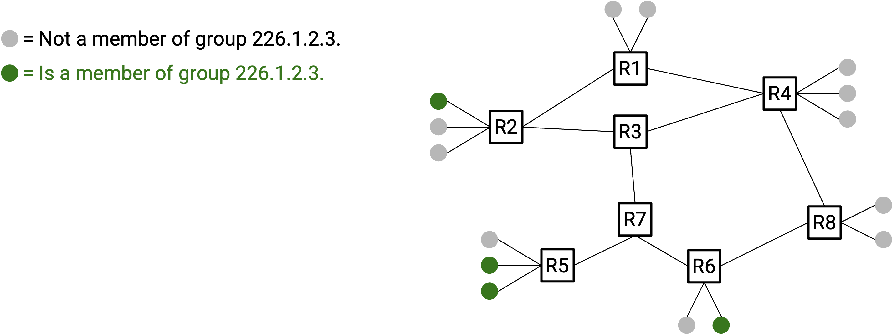
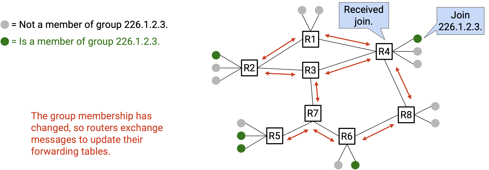
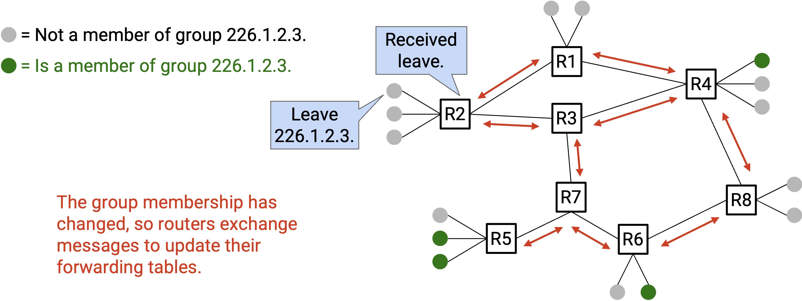
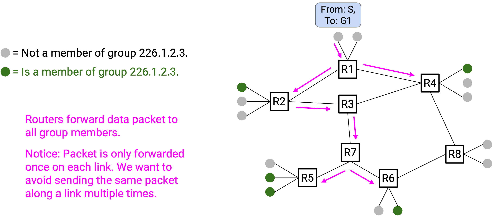
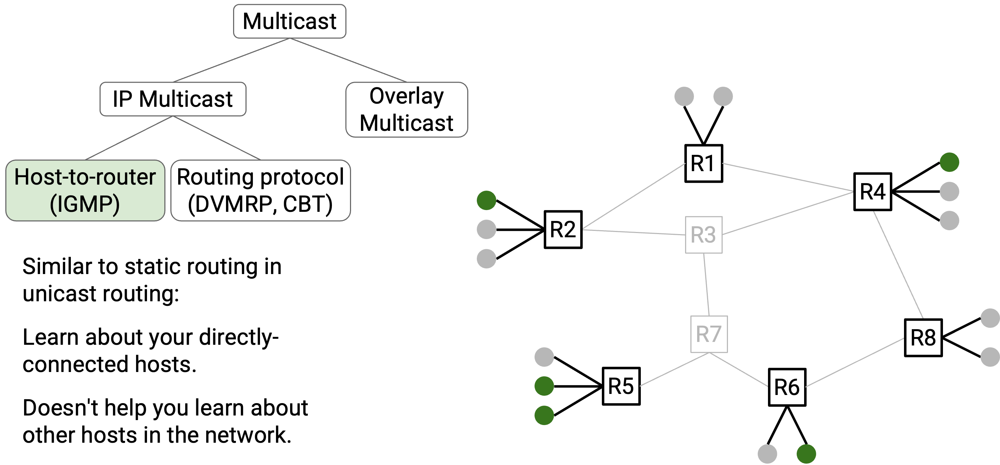
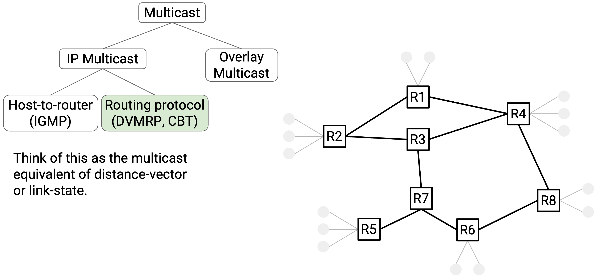
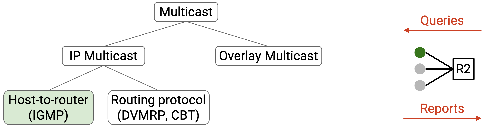

IP Multicast
Brief History of IP Multicast
IP multicast was actively researched and developed in the 1990s and 2000s. The development was motivated by the expectation that the killer application for the Internet would be live-streamed TV or radio. (Fun fact: One of the earliest live-streamed concerts was the Rolling Stones in 1994.)
Looking back, the IP multicast protocols developed in the 1990s and 2000s had mixed success in terms of adoption. Modern routers do offer support for the IP multicast protocols we’ll see, but network operators don’t always enable these protocols on the routers. (Disabling the protocol on the router essentially means that the router doesn’t understand or support that protocol.)
IP multicast protocols are sometimes used within individual domains (e.g. inside a datacenter network). However, IP multicast protocols are rarely/never deployed across different domains. This means that users cannot expect to use IP multicast at the global Internet level, e.g. if a group of users around the world joined a multicast group, the modern Internet would not automatically support multicasting packets to that group.
Although these protocols were not globally deployed, the techniques used in these protocols can be applied to solve different networking problems. In particular, these techniques have become relevant again for solving problems related to AI training (we’ll study this when we discuss collectives).
IP Multicast Service Model
How do we define a group? Each multicast group is defined by an IP address. The addresses from 224.0.0.0 to 239.255.255.255 are multicast addresses, and everyone knows that addresses in this hard-coded range are multicast addresses.

To join a group, you will announce the multicast address of the group you want to join. At least one router should hear your message (e.g. your home router), and then the routers will coordinate amongst themselves to spread this information (e.g. with a routing protocol). Eventually, all the routers will have learned that you are part of that group.

Similarly, you can announce that you are leaving a group, and you again use the multicast address to identify which group you are talking about.

To send a packet to a group, all you need to do is fill in the multicast group address as the IP destination field. Then, the routers will use that group address to forward the packet to all group members. Notice that as the sender, you don’t need to worry about who belongs to the group, because the routers will figure that out for you.

In summary, the IP multicast service model defines three operations for end hosts: You can send packets to a group (even if you are not a part of that group yourself). You can announce that you are joining a group. You can announce that you are leaving a group. In all three operations, your job is just to send out packets. The routers will process those packets, coordinate with each other (e.g. run a routing protocol), and decide how to route multicast packets accordingly.
Now that we know how hosts interact with IP multicasting (sending, joining, and leaving), we can think about how routers deliver multicast packets.
In the unicast model, a router receives a packet and forwards the packet along a single next-hop. Now, in the IP multicast model, when a router receives a multicast packet (i.e. destination is a multicast group address), the router will forward the packet along zero, one, or multiple outgoing links, so that the packet reaches all group members.
To implement multicast, the router needs some additional state to keep track of group membership, so that the router can forward the packet to only the next-hops that lead toward the group members. If a next-hop doesn’t lead to any group members, there’s no need to send the packet along that next-hop. As users join and leave the group, a router’s next-hops for that group might change.
Implementing Multicast
With our service model defined, we are now ready to implement IP multicasting in routers. Remember our end goal here: Users interact with the network by sending packets, announcing joins, and announcing leaves. The routers must take this information and use it to correctly forward multicast packets to all members of that group (as defined by the multicast address).
We can divide this problem into two parts:
-
How do routers know what groups their directly-connected hosts belong to? We’ll use a protocol called IGMP to solve this.

-
How do routers forward packets through the network to reach the destination group members? We’ll look at two protocols for solving this: DVMRP and CBT. Both protocols achieve the same goal, so you can pick either one for your implementation (the same way you can pick either distance-vector or link-state, but not both).

IGMP: Directly-Connected Hosts
Before we solve the larger problem of multicast routing, let’s start with a smaller problem. Suppose a router is directly connected to many hosts. The router needs some way to know which group(s) each host belongs to. We’ll use a protocol called IGMP (Internet Group Management Protocol) to achieve this.
At a high level, the router and the hosts exchange messages so that the router is informed about everybody’s group membership(s). Some types of messages that can be exchanged:
Queries: The router periodically sends Queries to the hosts. These messages ask: What group(s) do you belong to?
Reports: In response, hosts send Reports back to the router. Reports answer the question: These are the group(s) I belong to. Hosts can also send unsolicited Reports (i.e. without waiting for a Query).

By periodically exchanging Queries and Reports, the router stays informed about the latest group membership(s). If the router doesn’t receive a Report about a membership for a long time, the router will assume that membership has expired and invalidate it.
IGMP helps routers learn about directly-connected hosts. However, routers still don’t know anything about other hosts elsewhere in the network, so we’ll need routing algorithms for those.
To draw a comparison to distance-vector routing, you can think of IGMP as the multicast version of static routing, where a router learns about its directly-connected hosts (but not other hosts elsewhere in the network).